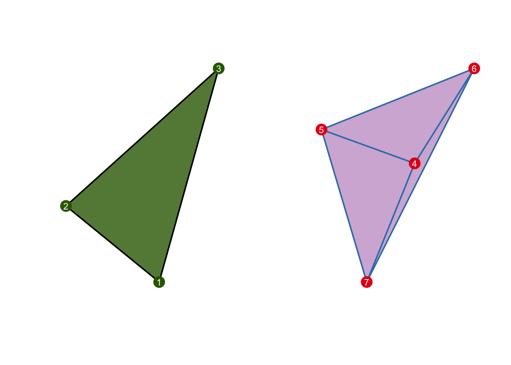

Chapter 2 Motivation
In simplest term, topologist differentiates abstract spaces by finding its homeomorphic invariant such as compactness, Hausdorff-“ness,” connectivity. There are many topological invariant that is helpful to assist doing such task. For example, homology turns abstract topological space into combinatorics objects to identifying the numbers of k-dimensional “holes” a space has (which is invariant). For example, a circle (\(S\)) and a disk (\(D\)) can be represented by a hollow triangle and filled triangle respectively: \(S\) has 1 hole but \(D\) does not have any.
 Similarly, Morse theory study a another type of invariant of differentiable manifold by looking at its differential function defined on that space, and discrete Morse theory uses the same idea by turning these gradient field into “simpler” complexes that can represent the topological space.
The fundamental idea of Morse theory is that a sensible differential function can inform a lot about a manifold, so what is consider a sensible function?
Example Consider a unit sphere \(S^2\subset \mathbb{R}^3\) with the function \(f\) that collapse the sphere into the \(z-\)axis: \[ \begin{aligned} S^2 = \{(x,y,z)&\vert x^2 + y^2 + z^2 = 1\} \\ \\ f\text{ }: S^2 &\longrightarrow \mathbb{R} \\ (x,y,z)&\longmapsto z \end{aligned} \] The gradient of \(f\) is \(\nabla f = [0 \text{ } 0 \text{ }1]^\text{T}\). Let \(m\in\mathbb{R}\), we can see that the critical point of \(f\) encodes information about the sub-level set of \(S^2\):
Let \(m\subset \mathcal{R}\), consider the pre-image of M under \(f\): \[ f^{-1}(m) = \begin{cases} \emptyset &\text{ if } m < -1\\ (0,0,1)&\text{ if } m = -1\\ \text{a circle } &\text{ if } -1< m < -1\\ (0,0,-1) & \text{ if } m < = 1\\ \emptyset &\text{ if } m > 1 \end{cases} \text{ and } f^{-1}((-\infty,m]) = \begin{cases} \emptyset &\text{ if } m < -1\\ \text{a point }&\text{ if } m = -1\\ \text{a half-sphere } &\text{ if } -1< m < -1\\ S^2 & \text{ if } m \geq 1\\ \end{cases} \]
2.1 Morse function
Recall that the definition for a manifold:
Definition (Manifold) An \(n-\)manifold \(\mathcal{M}\subset\mathbb{R}^n\) is a \(T_2\) topological space (Hausdorff and with countable basis), where there exists a neighborhood \(U\subseteq \mathcal{M}\) for every \(m\in\mathcal{M}\) such that \(U\) is homeomorphic to an open ball in \(\RR^n\) induced by the Eucledian metric.
Definition (Critical Point) For an \(n-\)manifold \(\mathcal{M}\subset\mathbb{R}^n\), let \(f: \mathcal{M} \to \mathbb{R}\). An critical point of \(f\) is \(x\in\mathcal{M}\) such that \(\frac{\partial f}{\partial x} = 0\)